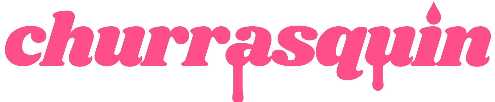

Cada uma é uma identidade completa: lettering desenhado sob medida, símbolo, versões do logo, ícone de app, paleta e aplicações. Toque numa para abrir a apresentação inteira.
O balcão, não a fogueira. Letra estreita e pesada com corte de faca a 30°; o q de "quin" vira gancho de açougue. Bordô, papel manteiga e carimbo violeta.
Abrir apresentação →
A palavra é o boi, cada letra um corte. O nome é fatiado em 7 regiões como o cartaz do açougue; só a picanha acende em brasa, o mesmo gesto do zoom no app.
Abrir apresentação →
Churrasco de domingo na laje. Itálico gordo de letreiro de boteco que derrete e pinga; símbolo e mascote "Solzão". Azul piscina, rosa e amarelo.
Abrir apresentação →